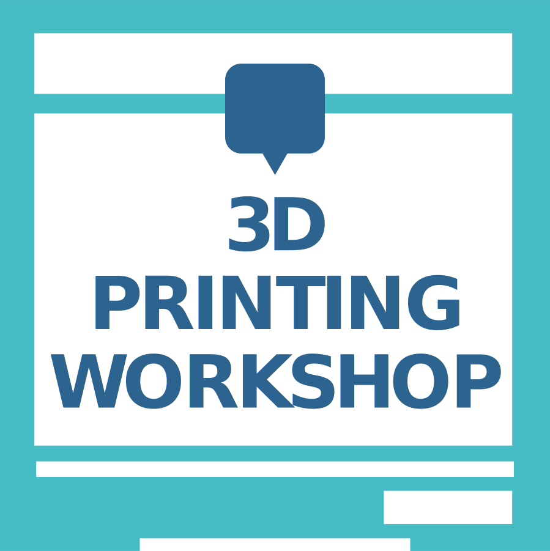
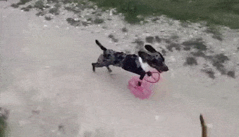
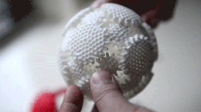
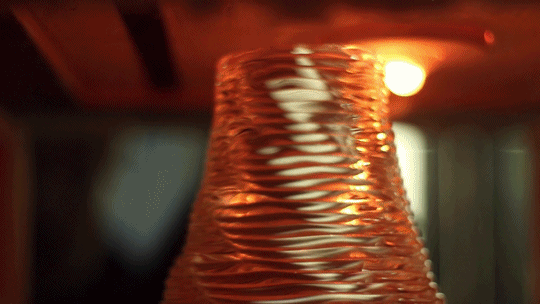
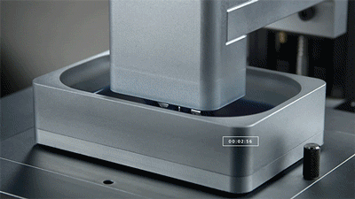
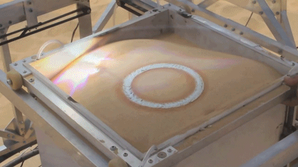
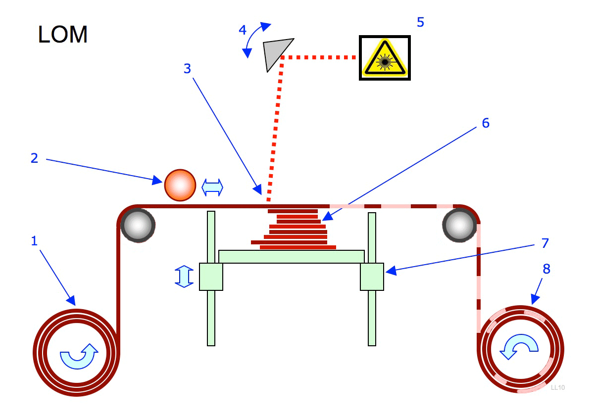
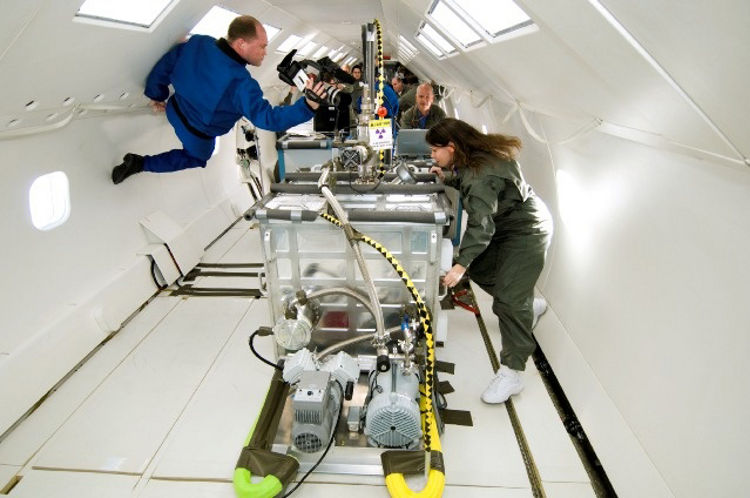
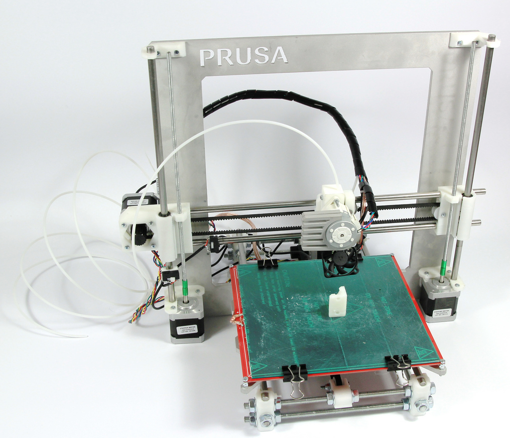
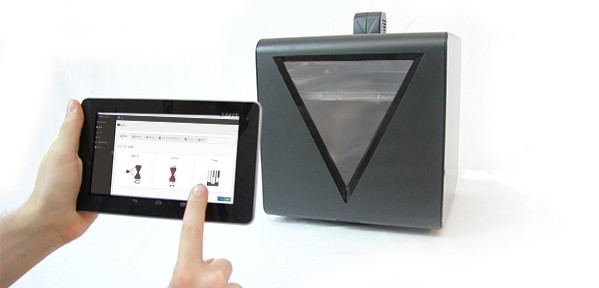

<!doctype html>
<html lang="en">

  <head>
    <meta charset="utf-8">

    <title>3D Printing Workshop 2015 - Politecnico Open unix Labs</title>

    <meta name="description" content="An introduction to 3D Printers by POuL">
    <meta name="author" content="Fabrizio Ferrai">
    <meta name="author" content="Federico Amedeo Izzo">

    <meta name="apple-mobile-web-app-capable" content="yes" />
    <meta name="apple-mobile-web-app-status-bar-style" content="black-translucent" />

    <meta name="viewport" content="width=device-width, initial-scale=1.0, maximum-scale=1.0, user-scalable=no, minimal-ui">

    <link rel="stylesheet" href="../reveal.js/css/reveal.css">
    <link rel="stylesheet" href="../reveal.js/css/theme/night.css" id="theme">

    <!-- Printing and PDF exports -->
    <script>
      var link = document.createElement( 'link' );
      link.rel = 'stylesheet';
      link.type = 'text/css';
      link.href = window.location.search.match( /print-pdf/gi ) ? '../reveal.js/css/print/pdf.css' : '../reveal.js/css/print/paper.css';
      document.getElementsByTagName( 'head' )[0].appendChild( link );
    </script>

    <!--[if lt IE 9]>
    <script src="../reveal.js/lib/js/html5shiv.js"></script>
    <![endif]-->

    <!-- For syntax highlighting -->
	<link rel="stylesheet" href="../reveal.js/highlight.js/src/styles/solarized-light.css" id="highlight-theme">
  </head>

  <style type="text/css">
  .reveal pre code {
    color: #3f3f3f;
    background: #eee none repeat scroll 0% 0%;
    font-size: 1.5em;
    line-height: 1.4em;
    border-radius: .2em;
  }
  </style>

  <body>
    <div class="reveal">
      <!-- Any section element inside of this container is displayed as a slide -->
      <div class="slides">
        <!-- Slides are separated by newline + three dashes + newline, vertical slides identical but two dashes -->
			<section data-markdown data-separator="^\n---\n$"
			         data-separator-vertical="^\n--\n$">
				<script type="text/template">


<!-- .slide: data-background="#fdfddf" -->



---

<!-- .slide: data-background="#333333" -->

<div style="float:left; width:50%">


<h3> Fabrizio Ferrai</h3>
<h4> [@fabferrai](https://twitter.com/fabferrai) </h4>
<h4> [ferrai.io](http://ferrai.io) </h4>
<h4> [github.com/ff-](http://github.com/ff-)</h4>
<h4> [fabrizio@ferrai.io](mailto:fabrizio@ferrai.io) </h4>
</div>

<div style="float:left; width:50%">


<h3> Federico Izzo</h3>
<h4> [@Coderfie](https://twitter.com/Coderfie) </h4>
<h4> [izzo.ovh](http://izzo.ovh) </h4>
<h4> [github.com/Nimayer](https://github.com/Nimayer)</h4>
<h4> [federico.izzo42@gmail.com](mailto:federico.izzo42@gmail.com) </h4>
</div>

---

# Index

- Perché la stampa 3d
- Cos'è una stampante 3D?
- Open Source Hardware: le stampanti desktop
- Materiali
- Come si costruisce?
- Dal modello 3D all'oggetto
- Slicing
- Software Open Source per la stampa
- Dove trovare i modelli online
- Modellazione: alcuni programmi

```
TODO: sistemare l'indice, i titoli vanno piú carini
```


---

# Intro: why?

--


--

# Why 3D Printers

--

## Libertà

Di immaginazione, design e costruzione



--

## Facilità

No assemblaggio (di solito), poche conoscenze richieste



--

## Risparmio

Nessuno spreco di materiale e produzione precisa (é additiva!)


### <!-- .element: class="fragment" --> *Ogni* forma é riproducibile

---

# What

--

## Some history

- <!-- .element: class="fragment" --> *Additive manufactoring* inventato negli anni 80
- 1984: Stereolitografia <!-- .element: class="fragment" -->
- STL: STereoLitography file format <!-- .element: class="fragment" -->
- <!-- .element: class="fragment" --> `Stampa 3D`: all'inizio si usavano le testine delle stampanti inkjet
- 1990s: nuovi metodi per l'AM dei metalli <!-- .element: class="fragment" -->
- 2010s: <!-- .element: class="fragment" --> *3D Printing* diventa il termine generico per queste tecniche

--

## Tipologie

1. Extrusion
2. Photopolymerization
3. Powder bed
4. Lamination
5. Metal wire process

--

### 1. Extrusion

- *Fused deposition modeling (FDM)*: sviluppata da Scott Crump alla fine degli 80s, commercializzata da Stratasys nel 1990
- Scaduto il brevetto, la comunitá open-source ha costruito un ecosistema intorno a questa tecnica, facendo crollare i costi
- *Come funziona*: l'ugello (nozzle) ad alta temperatura fonde del filamento termoplastico o metallico, che viene estruso in un flusso che indurisce istantaneamente per formare dei livelli.



--

### 2. Photopolymerization

- *Come funziona*: una vasca di polimero liquido viene esposta a un raggio controllato - il liquido che viene colpito dal raggio indurisce.



--

### 3. Powder bed

- *Come funziona*: della polvere viene fusa (tipicamente da un laser) e utilizzata per costruire i modelli livello per livello.
Un utile effetto collaterale é che la polvere non fusa fornisce supporto per il pezzo in stampa.



--

### 4. Lamination

- *Come funziona*: carta pressata, basso costo



--

### 5. Metal wire process

- *Come funziona*: ...un filo passa in un ugello, dove viene sciolto da un laser in un'atmosfera controllata composta da un gas inerte.
Piú sofisticato: raggio di elettroni anziché laser.



--

## Utilizzi

--

## Prototipazione

Architettura, Design, Meccanica

<!-- .slide: data-background="img/print.gif" -->

--

## Parti meccaniche innovative

<!-- .slide: data-background="img/3ddrone.gif" -->

--

## Biomedica

<!-- .slide: data-background="img/3dbio.jpg" -->

--

## Moda?

<!-- .slide: data-background="img/3ddress.gif" -->

--

## Cucina?

<!-- .slide: data-background="img/3dfood.gif" -->

---

# Open Source Printing
## Hardware

--

## Some parallel history

- Il progetto RepRap nasce dall'intenzione di sviluppare una 3D Printer che potesse produrre *autonomamente* gran parte dei propri pezzi, fosse *open-hardware* e a *basso costo*
- Fondato nel 2005 dal Dr Adrian Bowyer, professore di Ingegneria Meccanica, University of Bath (UK)

--

## [RepRap](http://reprap.org)

- Elettronica basata su Arduino
- Stampa a basso costo di materiale plastico (ABS, PLA, Nylon)



--

## TODO: situazione attuale, wars tra stampanti proprietarie

--

## Il futuro:

- [Fabtotum](http://www.fabtotum.com/)
- Altri materiali?



---


---

# How to Basic

<!-- .slide: data-background="img/howtobasic.jpeg" -->

--

## Come si costruisce

TODO

Recipe:
- Arduino Mega
- Heated bed?
- Stepper motors
- Extruder
- Hardware
- Kapton Tape
- TODO

---

# Materials

--

<!-- .slide: data-background="img/mais.jpg" -->

## PLA

- Cosa é: un polimero biodegradabile, prodotto dall'acido lattico, fermentato dal mais.
- Caratteristiche: piú duro dell'ABS, scioglie tra i 180°C e i 220°C, ma é piú viscoso quindi é piú probabile che inceppi l'estrusore.

--

## PLA: Stampa

- Materiale ideale per le RepRap: é dimensionalmente stabile, non c'é bisogno di un heated bed, e costa poco.
- In generale "facile" da stampare: temperature basse, poca pressione necessaria
- Come stamparlo: aderisce abbastanza bene al piatto: possibile stamparlo direttamente su vetro, o ancora meglio su Kapton Tape (se necessario aggiungere colla stick)

--

## ABS

- Cosa é: Acrylonitrile Butadiene Styrene (ABS), una termoplastica comune, perché leggera e facile da utilizzare.
- Caratteristiche: migliori proprietá meccaniche di altre termoplastiche, meno fragile del PLA e regge temperature piú alte.

--

<!-- .slide: data-background="img/warp.jpg" -->

## ABS: Stampa

- L'ABS é ottimo perché é facile da trovare in commercio, richiede meno forza di estrusione del PLA, e rende meglio sugli oggetti piccoli
- Downsides: stampato a temperature piú alte (tra i 200 e i 250°C, di media 230°C), fumi potenzialmente tossici per persone e animali: *non respiratene i fumi e areate l'ambiente*
- Problemi in stampa: si imbarca catastroficamente sulle parti larghe
- Come stamparlo: preparate dell'*ABS juice* (ABS+acetone puro) e spalmatelo sul piatto prima di stampare, lasciar freddare prima di staccare il pezzo.

--

## Nylon

- Cosa é: un poliammide, cioé un polimero contenente monomeri di amidi unite da legami peptidici.
- In pratica, nylon.
- Estremamente forte. Come per l'ABS, stampare in *luogo ventilato*

--

## Nylon: Stampa

TODO: aggiungere fragments in giro

Vantaggi del nylon:
1. Economico e molto diffuso
2. Le stampe sono flessibili e durevoli, perché é un materiale piú forte di ABS e PLS.

Svantaggi del nylon:
1. Piú filamentoso di ABS e PLA
2. Imbarca __molto piú di ABS e PLA__
3. Molta piú pulizia necessaria, e bisogna seccarlo prima della stampa

--

Policarbonato (PC), TPU, PET, PVA: TODO

---


<!-- .slide: data-background="#fff" -->

---


<!-- .slide: data-background="#fff" -->

---

# Open Source Printing
## Software

---

# Model 2 Object
<!-- .slide: data-background="img/drawing-hands.jpg" -->

--

## The workflow:
- Modello 3D generico
     Mesh repair: controllare le superfici <!-- .element: class="fragment" -->
- STL: Formato 3D semplice e adatto alla stampa
     Slicing: divisione in piani <!-- .element: class="fragment" -->
- GCode: File contenente la sequenza di comandi per la stampa
     Software Host: invia i comandi alla stampante <!-- .element: class="fragment" -->

--

## Mesh repair
#### es: NetFabb
<br></br>
- Verifica che la superficie dell'oggetto non abbia errori
<!-- .slide: data-background="img/meshfix.jpg" -->

--

## Slicing

- Seziona il modello in livelli
- Decide come realizzare ogni livello
<br><br>
### Alcuni parametri modificabili sono:

--

### Riempimento (infill):
#### I modelli solidi vengono resi cavi, in questo modo:

- Si usa __meno materiale__ di stampa
- La stampa è __più veloce__
- L'oggetto prodotto è __più leggero__
- è possibile scegliere __trama__ e __percentuale__ di riempimento

<!-- .slide: data-background="img/infill.jpg" -->

--

### Strutture di supporto

- Rendono possibile stampare parti "sospese"

- Necessarie per superfici inclinate > 45°

<!-- .slide: data-background="img/SupportGraphic.jpg" -->

--

### Altri parametri:
Da modificare in caso di problemi

- __Spessore dei livelli__: più sottile = più dettagliato, più tempo

- __Temperatura estrusore__: 180°C per PLA e 220 °C per ABS

- __Velocità di stampa__: Generalmente più lento è meglio

- ecc...
<!-- .slide: data-background="img/problems.jpg" -->

--

### Software per Slicing

- Ultimaker Cura

- Slic3r

- Kissengine

<!-- .slide: data-background="img/owl-slicer.jpg" -->

---


---

# Host Software
## How to control the 3D printer
<!-- .slide: data-background="img/prusa_rasp.jpg" -->

--

### Print over USB

- Pronterface

- Repetier Host

### Print over Network

- Octoprint

--

### Octoprint / Octopi

- The software runs on Raspberry Pi connected to the printer

- You send the jobs and control the printer via a web interface

---

# Finding models
## On the internet

--

- Thingiverse
- Shapewawys
- Grabcad
- Youimagine
- Cults3D
- Sketchfab

---

# 3D Editors

--

- Editor matemagico: Openscad
- Editor webboso: Tinkercad
- Alternative: Google sketchup

---

<!-- .slide: data-background="#00aa00" -->


---

# Links

* TODO

---

# Thank you!


Queste slides sono licenziate Creative Commons<br>
Attribution-ShareAlike 3.0 Unported

## [POUL.ORG](https://www.poul.org)


          </script>
        </section>
      </div>

    </div>

    <script src="../reveal.js/lib/js/head.min.js"></script>
    <script src="../reveal.js/js/reveal.js"></script>

    <script>

    // Full list of configuration options available at:
    // https://github.com/hakimel/reveal.js#configuration
    Reveal.initialize({
      controls: true,
      progress: true,
      history: true,
      center: true,

      transition: 'slide', // none/fade/slide/convex/concave/zoom

      // Optional reveal.js plugins
      dependencies: [
        { src: '../reveal.js/lib/js/classList.js', condition: function() { return !document.body.classList; } },
        { src: '../reveal.js/plugin/markdown/marked.js', condition: function() { return !!document.querySelector( '[data-markdown]' ); } },
        { src: '../reveal.js/plugin/markdown/markdown.js', condition: function() { return !!document.querySelector( '[data-markdown]' ); } },
        { src: '../reveal.js/plugin/highlight/highlight.js', async: true, callback: function() { hljs.initHighlightingOnLoad(); } },
        { src: '../reveal.js/plugin/zoom-js/zoom.js', async: true },
        { src: '../reveal.js/plugin/notes/notes.js', async: true }
      ]
    });

  </script>

  </body>
</html>
